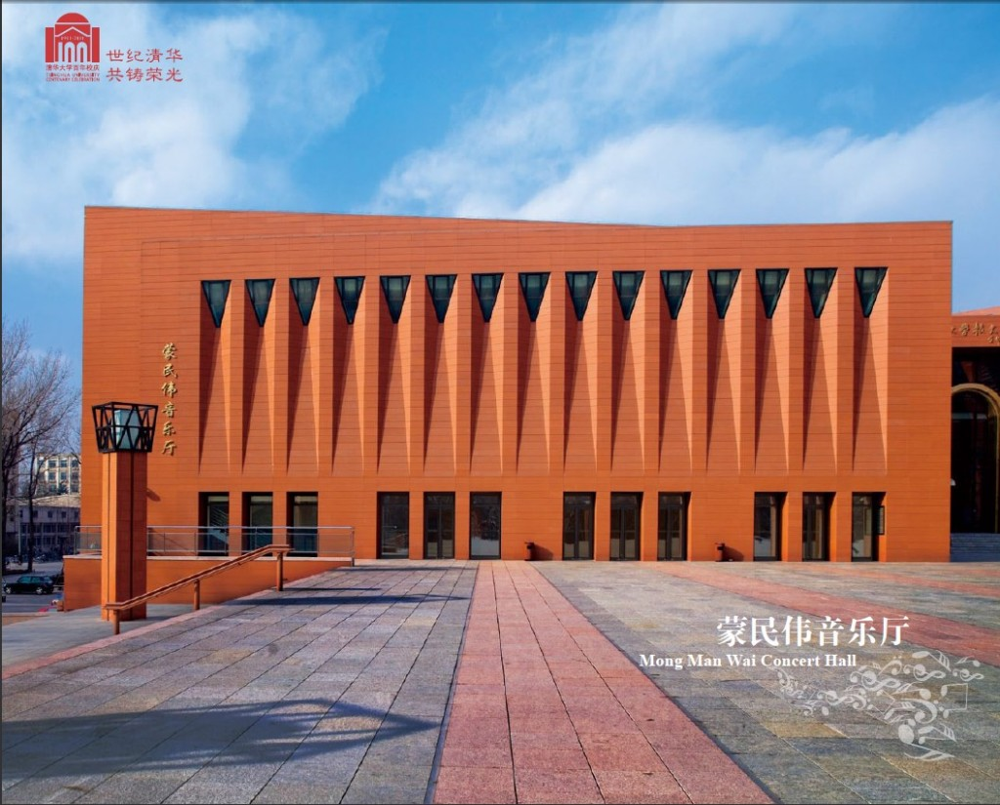
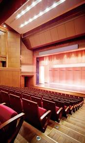

Mong Man Wai Concert Hall, No. 1, Tsinghua Science Park
Haidian District, Beijing 100084
China
GPS coordinates: 40.000601,116.32232
(you can use these coordinates to get a satellite view of the Concert Hall on google maps)
For a map of the Concert Hall and Holiday Inn see the following:
A: Holiday inn
B: Meng Minwei (Mong Man Wai) Concert Hall
The conference will take place at the Mong Man Wai Concert Hall, Tsinghua University. The Mong Man Wai Concert Hall is designed by academician Li Daozeng and donated by Tsinghua alumnus Mr. Mong Man Wai, Chairman of HKR International Limited. It is also a landmark building for Tsinghua University’s centenary celebration. It can hold 510 people. The stage is 12 meters wide and 7 meters high. The Concert Hall has professional standards of facilities. It can be used for concerts, drama, opera, ballet and other medium-sized performances and various types of conferences.
For more information about Tsinghua,
please visit http://www.tsinghua.edu.cn/publish/then/5774/index.html


{kind=link}